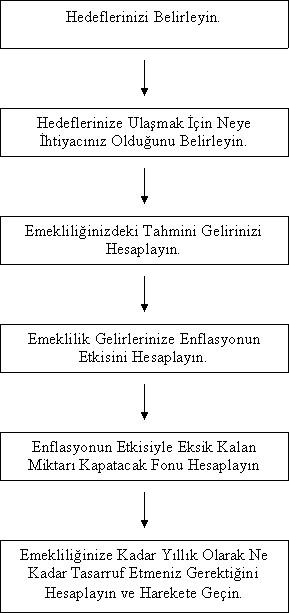

EMEKLİLİK PLANLAMASI NASIL YAPILIR
Hiç kimse para uğruna onun için evlenen biri kadar çalışamaz.
Kin Hubbard
Bir Çin atasözü: Kuyu kazmak için susamayı beklemeyin. Hayatınızın hangi evresinde olursanız olun, hangi işi yapıyor olursanız olun, tecrübelerinizle öğrendiğiniz ve sadece o işi yapan kişinin bilebileceği bazı hassas noktalar vardır. Emeklilik planlaması da, insan hayatının en kritik dönemleri olan emeklilik yıllarına nasıl hazırlık yapılması gerektiğini ve bu hazırlıkları yaparken dikkat edilmesi gereken noktaları belirler. Aşağıda emeklilik planlaması yapılırken adım adım izlenmesi gereken basamakları görüyorsunuz:

Hedeflerinizi Belirleyin
Hedef belirlemekten hala bıkmadıysanız bilmenizi isterim ki bu konuda kararlıyım. Hedefler hayatımızın her anında karşımıza çıkıyor. Onlar olmadan rotası olmayan bir gemiden farkımız olmuyor. Rüzgarda salınan bir yaprak misali bir bakıyorsunuz zaman geçivermiş. Oysa anılarınızın birçoğu dün gibi gözünüzün önündedir. Emeklilik planlaması yapabilmenin ön koşulu, emekliliğinizde nasıl bir yaşam tarzına sahip olacağınızdır. Bugün yaşadığınız evde yaşamaya devam mı edeceksiniz yoksa başka bir yere mi taşınacaksınız? Yaşam tarzınızı aynı şekilde devam mı ettireceksiniz yoksa emekli maaşınız düşeceği için onu da düşürmeyi mi planlıyorsunuz? Yoksa emekli olduğunuzda dünya seyahatine mi çıkmayı planlıyorsunuz? İsteklerinizin ne olduğu çok önemli değildir ama o isteklere ulaşmak için nelere ihtiyacınız olduğu çok önemlidir. Kaç yaşında emekli olmayı planlıyorsunuz? 60 yaşında emekli olmayı planlayan biri ile 70 yaşında emekli olmayı planlayan birinin yapması gereken birikim aynı değildir. Tanıdığım bir 70 yaş grubu var, 10-15 kişilik bir grup. 65 yaşında emekli olmaya karar vermiş ve o ana kadarki işlerini 65 yaşında tasfiye etmiş olan bu insanlar şu anda emeklilik yılları için hazırladıkları yatırım gelirleri ile düzenli olarak dünyanın muhtelif ülkelerine seyahatlere çıkıyorlar. Birlikte amatör turlar düzenliyorlar ve toplu hareket ettikleri için de kendilerine has avantajlar sağlayabiliyorlar. Aynı zamanda o yaş grubundaki insanların daha fazla desteğe ihtiyacı olduğundan birbirleri arasında bu uyumu da sağlayabiliyorlar. Bu grubun üyelerinden biriyle bir kokteylde tanıştım ve emeklilik konusunda bu derece bilinçli insanların olması beni çok mutlu etti. Umarım ilerleyen yıllarda bu sayı artar.
Hedeflerinize Ulaşmak İçin Neye İhtiyacınız Olduğunu Belirleyin
Emekli olmak istediğiniz yaşı, emekli olduğunuzda gerçekleştirmek istediğiniz projelerinizi, sürmek istediğiniz yaşam tarzını ve diğer faktörleri düşündüğünüzde ortaya mali bir portre de çıkmış olur. Genellikle emekli olmuş olan insanlar aktif çalışanlara göre daha az harcarlar. Bunun sebebi emekli oldukları için işe gidip gelirken yapılan ulaşım masraflarının, aktif çalışırken yoğun olan sosyal aktivite giderlerinin, kredi ödemelerinin ve çocukların masraflarının azalmış olmasıdır. Harcamaların ne kadar düşebileceği konusunda net bir şey söyleyebilmek mümkün değil ama emekli olduğunuzda aynı yaşam tarzına sahip olduğunuzda bile aktif çalışma hayatınızdaki harcamalarınızın yaklaşık %70’i kadar bir harcama yaparsınız. Bu durumda yılda 12.000 TL kazanıyorsanız, emekli olduğunuzda yılda yaklaşık olarak 9.000 TL kazanarak da aynı yaşam standardına sahip olmayı sürdürebilirsiniz. Bu durumda aynı yaşam standardına sahip olmayı sürdüreceğiniz ama aynı zamanda yılda bir kez yurtdışı seyahatine çıkabileceğiniz bir emeklilik istiyorsanız 9.000 TL’ye yurtdışı seyahati gidiş dönüş masrafları olan 2.000 TL’yi de eklemelisiniz. Ortaya çıkacak olan sonuç 11.000 TL ve bu miktar sizin ne kadar emeklilik maaşına sahip olmanız gerektiğini vermektedir..
Emekliliğinizdeki Tahmini Gelirinizi Hesaplayın
Emekli olduğunuzda tahminen ne kadar gelire sahip olacağınızı hesaplamak hem çok basit hem de çok önemlidir. Sosyal güvenlik sisteminden ne kadar emekli maaşına sahip olacağınız zaten bellidir. Bunun için sizinle aynı statüden emekli olmuş olan kişilerin maaşlarını sormanız ya da direk olarak bu bilgiyi bağlı bulunduğunuz sosyal güvenlik kuruluşundan öğrenebilmeniz mümkündür. Bunun yanında hayat sigortasınız veya bireysel emeklilik sigortanız varsa danışmanlarınızı arayıp size tahmini emekli maaşınız konusunda bilgi vermelerini sağlayabilirsiniz. Bunların dışında bir yatırım geliriniz, kira geliriniz varsa ya da emekli olduğunuzda olacaksa onları da hesaba dahil etmeniz daha gerçekçi sonuçlara ulaşmanızı sağlayabilir. Hedeflerinize ulaşmak için ne kadar bütçeye sahip olmanız gerektiğini analiz ettikten sonra emekliliğinizdeki tahmini gelirinizi hesaplamak sizi bir sonraki aşamaya taşır. O halde şu anda 12.000 TL aktif çalışırken yıllık kazanç elde ettiğinizi düşünelim. Emekliliğinizde de elinize geçecek toplam yıllık miktarın 10.000 TL olacağını düşünelim.
Emeklilik Gelirinize Enflasyonun Etkisini Hesaplayın
Hedeflerimize ulaşmak için emekliliğinizde 11.000 TL yıllık kazanca ihtiyacınız olduğunu, oysa şu an için emekliliğinizdeki tahmini gelirinizin 10.000 TL olacağını hesapladınız. Bu durumda yıllık enflasyonun %8 olduğu ve 20 yıl sonra emekli olacağınız varsayımıyla hareket edersek emekli olduğumuzda ne kadar ek finansman ihtiyacımız olacağını rahatlıkla hesaplayabiliriz. Buna göre şu an itibarıyla emeklilik ihtiyaçlarımızdaki 1.000 TL tutarındaki açığın, yıllık %8 enflasyon oranı ile bize 20 yıl sonraki maliyeti:
Gelecek Değer = Bugünkü Değer x 4,6610
Gelecek Değer = 1.000 x 4,6610
Gelecek Değer = 4.661 TL
Demek ki bugünkü 1.000 TL bütçe açığının size maliyeti 4.661 TL olacaktır.
Enflasyonun Etkisiyle Eksik Kalan Miktarı Kapatacak Fon Tutarını Hesaplayın
Bu aşamaya gelindiğinde, emeklilik giderlerinizi karşılayabilmek için yıllık 4.661 TL bütçe açığınız olduğunu öğrenmiş bulunuyorsunuz. Bu durumda emeklilik hedefleriniz ulaşabilmenin yolu bütçe açığınızı kapamaktan geçiyor. Bu bütçe açığını kapamak için ihtiyacınız olan fon miktarını birlikte tespit edelim. Yıllık %8 enflasyon sizin aleyhinize çalışmaya devam edecek. Ama siz de buna karşılık yatırım yaparak aradaki farkı kapamaya çalışacaksınız. Yatırımlarınızın %13 getiri elde ettiğini düşünürsek eğer, toplamda her yıl enflasyondan arındırılmış olarak (%13 - %8) %5’lik bir kazancınız olur. Bu kazanç miktarı da emeklilik fonlarınıza artı olarak yansır. Yıllık 4.661 TL tutarındaki açığınızı kapatabilmek için, enflasyondan arındırılmış %5 oranında getiri sağlayarak 20 yılda;
Bugünkü Değer = Ödeme Tutarı x 12,4622
Bugünkü Değer = 4.661 x 12,4622
Bugünkü Değer = 58.086 TL tutarında bir ekstra kazanç elde etmeniz gerekir. Diğer bir deyişler enflasyonun etkisi dolayısıyla emeklilik ihtiyaçlarınızı karşılama konusunda eksik kalan fonun toplam tutarı 58.086 TL’dir. Bu tutarı sizin emekli olacağınız yıla kadar karşılamanız gerekir ki istediğiniz yaşam standardında emekli olabilesiniz.
Emekliliğinize Kadar Yıllık Olarak Ne Kadar Tasarruf Etmeniz Gerektiğini Hesaplayın ve Harekete Geçin
Emekli olana kadar ne kadarlık bir fona ihtiyacınız olduğunu artık biliyorsunuz. Toplam 58.086 TL tutarındaki ihtiyacınız karşılamak için yıllık olarak tasarruf etmeniz gereken miktarı da hesapladığımızda emeklilik planlama sürecinin sonuna gelmiş oluruz. Portföyünüze yıllık olarak %13 kazandırdığınızı düşündük. Toplamda 20 yılın sonunda %13 yıllık getiri elde ederek 58.086 rakamına ulaşmaya çalışıyoruz. Bu da aslında basit bir paranın zaman değeri sorusu ve işte cevabı:
Gelecek Değer = Ödeme Tutarı x 81
58.086 = Ödeme Tutarı x 81
Ödeme Tutarı = 717 TL
Örneğimize göre emeklilik yılları için gerekli olan açığınızı kapatmak için 20 yıl boyunca yıllık %13 getiri elde ederek 717 TL tasarruf etmeniz yeterli olacaktır. Bu hesabı kendiniz için gerçek rakamlarınızla da yapabilirsiniz.
İşin en zor kısmı şimdi başlıyor çünkü emeklilik planlama sürecini uygulayacak olan sizsiniz. Finansal yaşamınızın kaderi sizin elinizde ve bunu kendiniz için bir eğlenceye ya da eziyete dönüştürebilirsiniz. Keyif almaya bakmanızı ve hayatı tadını çıkararak yaşamanızı öneririm. Diğer seçeneğin bedelleri tahmin ettiğinizden çok daha ağır olabiliyor.